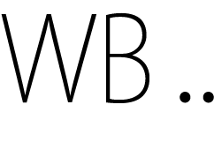

Focus
FOCUS
Balance is een concept serie van foto’s en keramiek dat gebaseerd is op het bewaren van rust in ons drukke bestaan, om weer te beleven en te voelen wat ons nu echt bezig houd.
De rust, de focus op hoe je eet en wat je eet, op het proeven en de smaak sensaties in je mond.
Datum: Juni 2014
Categorie: Stills, product, in opdracht
Concept, productdesign, styling : Willemien van den Broek
Fotografie: Ester Tak
Model: Nadine Kool
© 2014 willemien van den broek